DRUPAL
Es un sistema de gestión de contenidos o CMS libre, modular, multipropósito y muy configurable
que permite
publicar artículos, imágenes, archivos y que también ofrece la posibilidad de otros servicios añadidos como
foros, encuestas, votaciones, blogs, administración de usuarios y permisos.
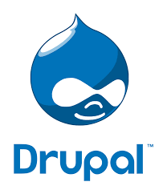
COMO INSTALAR DRUPAL CON SU SERVIDOR XAMPP
Paso #1
Primero abrimos xampp e inicializamos los servidores de Apache y MySQL.(Acá ya se encuentran
inicializados).

Paso #2
Nos vamos al administrador de MySQL. Luego aquí mismo crearemos una nueva base de datos (en
nuestro caso ya la creamos “Drupal”).
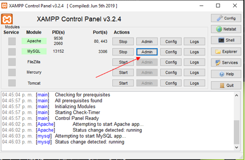
.PNG)
Paso #3
Se descomprime el archivo de Drupal el cual descargamos de la página oficial de Drupal. Luego
de esto vamos a abrir la carpeta que nos dejara, copiaremos todos los archivos de esta y los iremos a pegar a la
carpeta htdocs alojada en la carpeta XAMPP, ahora para ser más ordenados dentro de la carpeta htdocs crearemos una
carpeta con el nombre de Drupal y ahí pegaremos los archivos que copiamos.
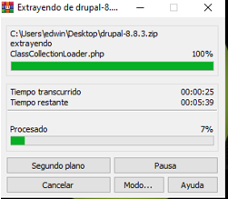
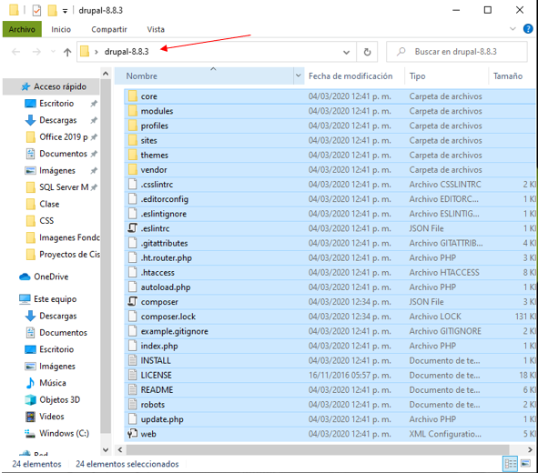
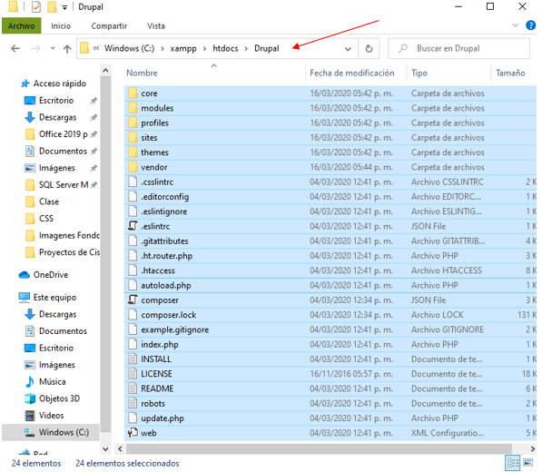
Paso #4
Luego de hacer vamos a ir a nuestro navegador y vamos a abrir nuestro localhost y
seleccionaremos la carpeta Drupal o podemos poner de una vez localhost/Drupal o el nombre que le hallas puesto a
la carpeta en htdocs. Escogemos el idioma y damos clic en “Guardar y Continuar”.
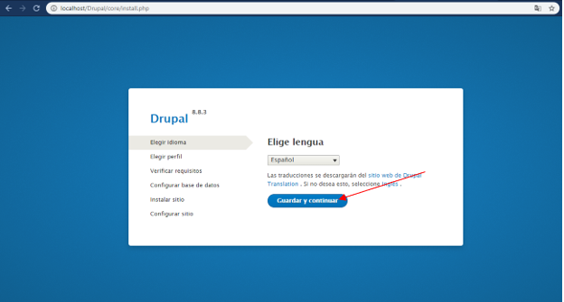
Paso #5
Seleccionaremos la instalación estándar y daremos “Guardar y Continuar”.
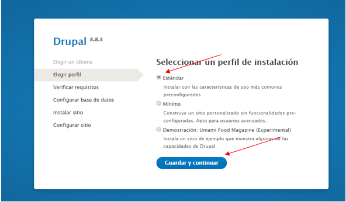
Paso #6
Nos mostrara los requerimientos para proseguir con la instalación aquí solo daremos “Continuar
de todos modos”
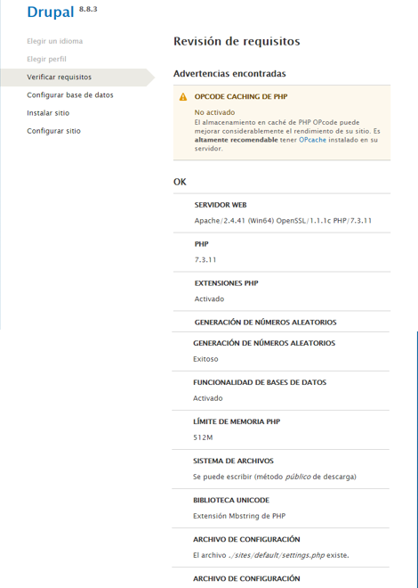
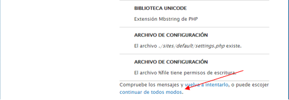
Paso #7
Acá escribiremos el nombre de la base de datos que creamos en el primer paso y nuestro usuario y
contraseña y daremos “Guardar y continuar”.
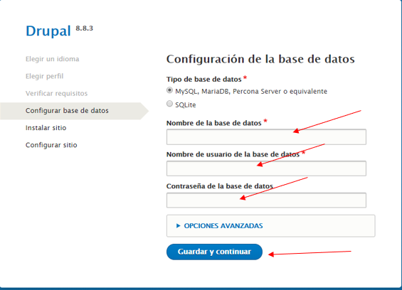
Paso #8
Observamos como empieza la instalación. De paso también se bajarán unas traducciones.
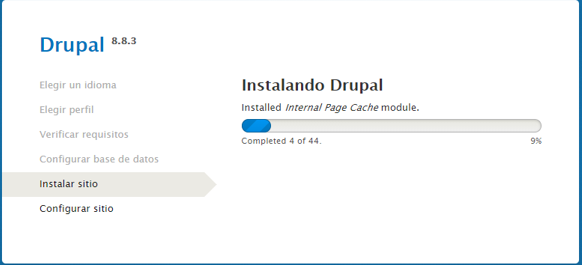
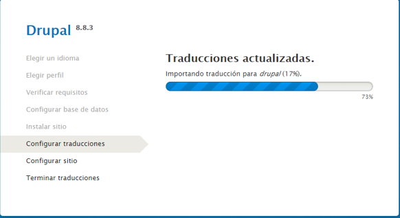
Paso #9
Configuraremos la cuenta para usarla con nuestro correo y más, ajustando también el país por
defecto y también la zona horaria. Luego daremos en “Guardar y continuar”.
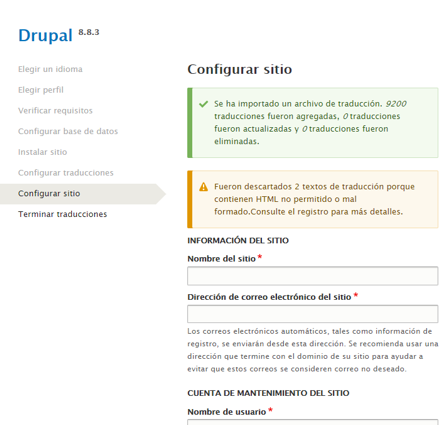
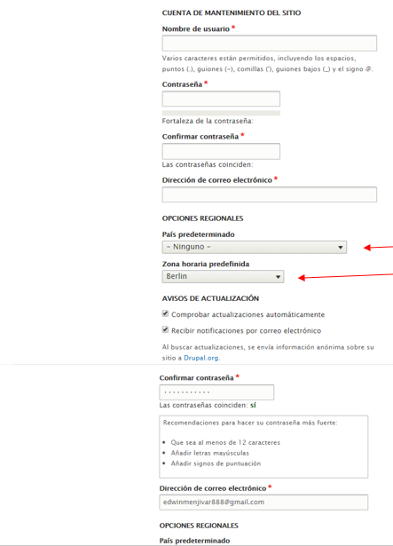
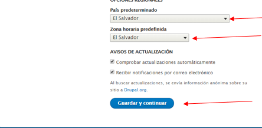
Paso #10
Es el ultimo paso solo esperamos a que termine de configurar las traducciones y listo.
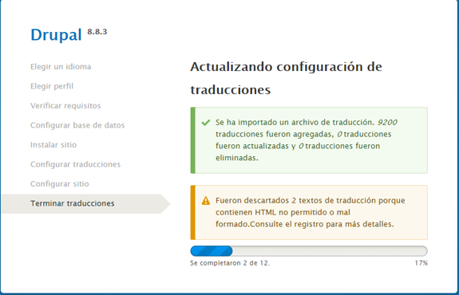
Paso #11
Drupal instalado y listo para usarse.
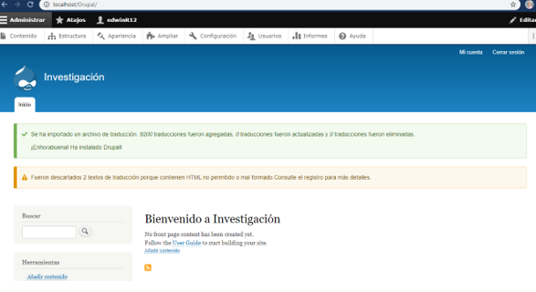
Funcionabilidad De Drupal
| Contenido flexible | Mejor diseño de plantillas | Accessible | Imágenes y ficheros | Testing automático del código | Soporte de base de datos mejorado | Mejor soporte para distribuciones | Extender |
|---|---|---|---|---|---|---|---|
| Puede definir campos personalizados que podrán ser utilizados en tipos de contenido, usuarios, comentarios, términos y otras entidades. Almacene los datos de esos campos en SQL, NoSQL o utilice almacenamiento remoto. | Controle exactamente qué se muestra en pantalla con la nueva Render API y algunos hooks drásticos para modificaciones. El nuevo módulo RDF provee marcado semántico para la web. | Las pantallas de administración son ahora mucho más accesibles. Las abundantes mejoras en el interfaz le facilitan la construcción de páginas web altamente accesibles. | El soporte de ímagenes en el contenido está ahora incorporado en el núcleo. Genere versiones diferentes para thumbnails, vistas previas y otros estilos de imágenes. Ahora es posible utilizar las gestiones privada y pública de ficheros al mismo tiempo. | Un nuevo entorno de testing automatizado, con más de 30.000 tests incluidos permite el testing de integración continua de todos los parches al núcleo de Drupal y a los módulos contribuidos. | Una nueva capa de abstracción de base de datos provee soporte para SQLite, MySQL/MariaDB y PostgreSQL out-of-the-box. Puede instalar módulos contribuidos para utilizar MS SQL Server, Oracle, y más. | Utilice perfiles de instalación para distribuir su producto personalizado basado en Drupal. Una nueva API y configuración exportable le permite capturar más opciónes en código. | >Gracias a un enorme esfuerzo de la comunidad, más de 800 módulos están disponibles o bajo desarrollo activo para Drupal 7, incluyendo Views, Pathauto, y WYSIWYG, con muchos otros en el camino de actualizarse cada día. |
¿En qué tecnologías se basa? ¿Cuál es su stack tecnológico?
Drupal está basado en un stack tecnológico elemental que debes contemplar para poder llevar a cabo tu proyecto. De una manera general, podríamos decir que necesitas varios niveles:
| Servidor | Sistema operativo | Base de Datos | Servidor Web | PHP | Por ultimo, Drupal |
|---|---|---|---|---|---|
| Hardware para alojar tu proyecto | Tu software para correr en el servidor anterior. Drupal puede funcionar en Unix, Linux, BSD, OS X y Windows. | Drupal necesita una base de datos para almacenar contenidos y configuraciones (hasta Drupal 7), y puede usarse MySQL o PostgreSQL. | Es un componente software responsable de servir los sitios web y los contenidos, que irá entre el servidor y el navegador que visite la plataforma. Normalmente se usa Apache Web Server , aunque Drupal puede montarse sobre un IIS de Microsoft. | Es el lenguaje de programación en el que está construido Drupal y necesitarás cargar el interprete del lenguaje en tu servidor asi como instalar algunas librerias importantes para trabajar con él. | El gestor de contenidos/framework para construir sitios web dinámicos que será la última herramienta que tendrás que instalar en tu servidor. |